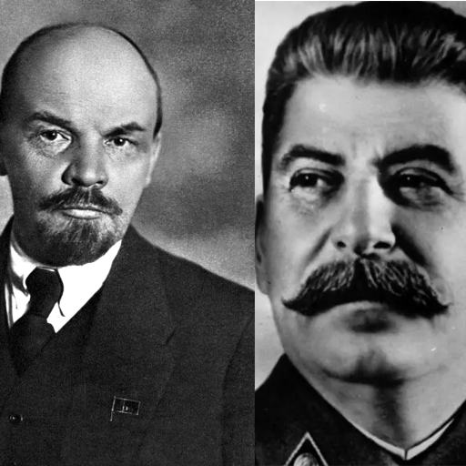

Written: 29/6/2025
1. The main point of Leninism is to adjust Marx's communism according to the current situation of semi-feudal Russia,
he (Lenin) thought that instead of waiting the workers to be educated politically, it will be better to create a highly disciplined party, filled with people who understand communism really well, and they will lead the workers to the communist society.
Vanguard Party is established.
2. The core problem is: with the establishment of vanguard party, Lenin indirectly
shattered the people into two classes; the politically enlightened one, and the politically immature one.
This is extremely dangerous because it closes mass participation and it will create distances between the party and the people.